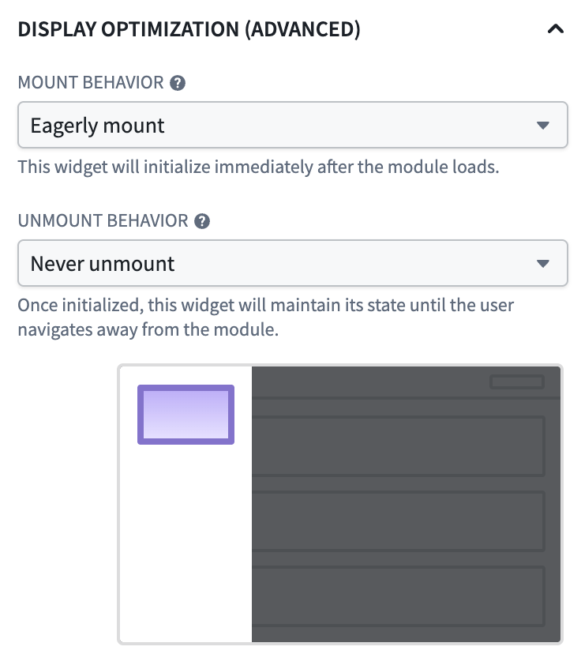

Widget display optimization is a Workshop setting that controls when individual widgets mount and unmount as users navigate within a module. By default, a widget mounts when the layout containing it renders and unmounts when that layout is no longer rendered, for example, when the user switches tabs. This frees up browser resources when widgets are not in view but means that widgets must reload their data and rebuild their state every time a user navigates back to them.
:::callout{theme="warning"} Display optimization is an advanced feature. Eagerly mounting widgets or keeping them mounted when not currently in view consumes browser memory, continues variable computation and data requests, and can degrade module performance if applied broadly. Configure non-default display behavior only on the specific widgets where it is needed. :::
The default values for each setting are tuned for most modules. Leave them in place unless one of the following scenarios, or something similar, applies:
Settings: Normal mount + Never unmount
When a custom widget is on an inactive tab, it normally resets completely. With Never unmount, the widget stays loaded in the background. When the user returns to the tab, the widget is instantly available with all its data and state intact.
Settings: Eagerly mount + Never unmount
The widget begins loading as soon as the module opens, even though the overlay or tab is not visible yet. When the user opens the overlay or switches to the tab, the content is already loaded and ready. This is useful for widgets on a destination page that users almost always reach, where the wait on first navigation would otherwise be disruptive. The tradeoff is a longer initial module load time.
Settings: Normal mount + Never unmount
Widgets configured to never unmount retain their internal state, including scroll position and any user input. This is helpful for widgets in drawers or tabs that users frequently open and close.
Settings: Delay until on-screen + Normal unmount
Widgets below the fold will not start loading until the user scrolls to them. This reduces the initial load time of the module, especially on pages with many widgets.
Settings: Delay until on-screen + Unmount when off-screen
Widgets initialize as they scroll into view and reset as they scroll out. This keeps only the visible widgets active, which can significantly improve performance for pages containing many widgets.
Display optimization is controlled by two independent settings: a widget's mount behavior and its unmount behavior.
Mount behavior controls when a widget initializes and begins loading its data.
Unmount behavior controls when a widget resets and clears its state.
Not all mount and unmount behaviors can be paired. Normal mount supports Normal unmount or Never unmount; Delay until on-screen supports any unmount behavior; and Eagerly mount only supports Never unmount.
To set display behavior for a specific widget:
The configuration panel contains a short description and animation of each mode and disables options that do not apply to the selected widget or layout type.
The default display behavior is tuned for modules with many widgets across many pages or sections, where unmounting widgets keeps memory usage and rendering work bounded. When you opt a widget into staying mounted:
Use the Performance Profiler to measure the impact of widget display optimization changes on your module's load and reload times.